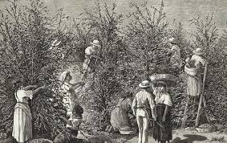
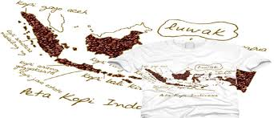

Sebelum lebih jauh menelusuri sejarah kopi ada baiknya kita mulai dengan asal-usul kata “kopi” itu sendiri. Menurut Wiliam H. Ukers dalam bukunya All About Coffe (1922) kata “kopi” mulai masuk ke dalam bahasa-bahasa Eropa sekitar tahun 1600-an. Kata tersebut diadaptasi dari bahasa Arab “qahwa”. Atau, mungkin tidak langsung dari istilah Arab tetapi melalui istilah Turki “kahveh”.
Di Arab istilah “qahwa” tidak ditujukan untuk nama tanaman tetapi merujuk pada nama minuman. Malahan ada beberapa catatan yang menyebutkan istilah tersebut awalnya merujuk pada salah satu jenis minuman dari anggur (wine). Namun para ahli meyakini kata “qahwa” digunakan untuk menyebut minuman yang terbuat dari biji yang diseduh dengan air panas. Biji tersebut diketahui berasal dari buah yang dihasilkan tanaman kopi.
Masih menurut Ukers, asal-usul kata “kopi” secara ilmiah mulai dibicarakan dalam Symposium on The Etymology of The Word Coffee pada tahun 1909. Dalam simposium ini secara umum kata “kopi” diyakini merujuk pada istilah dalam bahasa arab “qahwa”, yang mengandung arti “kuat”.
Ada juga pihak yang menyangkal istilah kopi diambil dari bahasa Arab. Menurut mereka istilah kopi berasal dari bahasa tempat tanaman kopi berasal yakni Abyssinia. Diadaptasi dari kata “kaffa” nama sebuah kota di daerah Shoa, di Selatan Barat Daya Abissynia. Namun anggapan ini terbantahkan karena tidak didukung bukti kuat. Bukti lain menunjukkan di kota tersebut buah kopi disebut dengan nama lain yakni “bun”. Dalam catatan-catatan Arab “bun” atau “bunn” digunakan untuk menyebut biji kopi bukan minuman.
Dari bahasa Arab istilah “qahwa” diadaptasi ke dalam bahasa lainnya seperti seperti bahasa Turki “kahve”, bahasa Belanda “koffie”, bahasa Perancis “café”, bahasa Italia “caffè”, bahasa Inggris “coffee”, bahasa Cina “kia-fey”, bahasa Jepang “kehi”, dan bahasa melayu “kawa”. Pada faktanya hampir semua istilah untuk kopi di berbagai bahasa memiliki kesamaan bunyi dengan istilah Arab.
Khusus untuk kasus Indonesia, besar kemungkinan kata “kopi” diadaptasi dari istilah Arab melalui bahasa Belanda “koffie”. Dugaan yang logis karena Belanda yang pertama kali membuka perkebunan kopi di Indonesia. Tapi tidak menutup kemungkinan kata tersebut diadaptasi langsung dari bahasa Arab atau Turki. Mengingat banyak pihak di Indonesia yang memiliki hubungan dengan bangsa Arab sebelum orang-orang Eropa datang.
Sejarah kopi di Indonesia dimulai pada tahun 1696 ketika Belanda membawa kopi dari Malabar, India, ke Jawa. Mereka membudidayakan tanaman kopi tersebut di Kedawung, sebuah perkebunan yang terletak dekat Batavia. Namun upaya ini gagal kerena tanaman tersebut rusak oleh gempa bumi dan banjir. Upaya kedua dilakukan pada tahun 1699 dengan mendatangkan stek pohon kopi dari Malabar. Pada tahun 1706 sampel kopi yang dihasilkan dari tanaman di Jawa dikirim ke negeri Belanda untuk diteliti di Kebun Raya Amsterdam. Hasilnya sukses besar, kopi yang dihasilkan memiliki kualitas yang sangat baik. Selanjutnya tanaman kopi ini dijadikan bibit bagi seluruh perkebunan yang dikembangkan di Indonesia. Belanda pun memperluas areal budidaya kopi ke Sumatera, Sulawesi, Bali, Timor dan pulau-pulau lainnya di Indonesia.
Pada tahun 1878 terjadi tragedi yang memilukan. Hampir seluruh perkebunan kopi yang ada di Indonesia terutama di dataran rendah rusak terserang penyakit karat daun atau Hemileia vastatrix (HV). Kala itu semua tanaman kopi yang ada di Indonesia merupakan jenis Arabika (Coffea arabica). Untuk menanggulanginya, Belanda mendatangkan spesies kopi liberika (Coffea liberica) yang diperkirakan lebih tahan terhadap penyakit karat daun. Sampai beberapa tahun lamanya, kopi liberika menggantikan kopi arabika di perkebunan dataran rendah. Di pasar Eropa kopi liberika saat itu dihargai sama dengan arabika. Namun rupanya tanaman kopi liberika juga mengalami hal yang sama, rusak terserang karat daun. Kemudian pada tahun 1907 Belanda mendatangkan spesies lain yakni kopi robusta (Coffea canephora). Usaha kali ini berhasil, hingga saat ini perkebunan-perkebunan kopi robusta yang ada di dataran rendah bisa bertahan. Pasca kemerdekaan Indonesia tahun 1945, seluruh perkebunan kopi Belanda yang ada di Indonesia di nasionalisasi. Sejak itu Belanda tidak lagi menjadi pemasok kopi dunia.